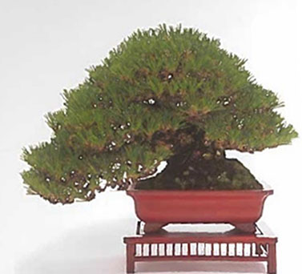

| Illustration | Description | ||||||||||||||
|---|---|---|---|---|---|---|---|---|---|---|---|---|---|---|---|
|  | Pines have an important role in making Japan what it is today.
Usually the very first tree people associate with bonsai is the extremely popular Kuromatsu. It is recommended for beginners because it is robust and easy to raise.
|